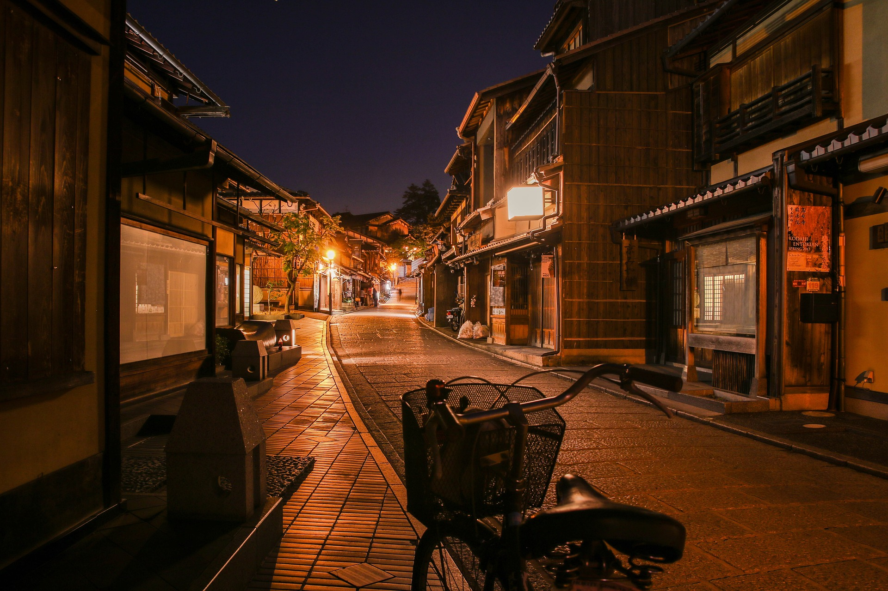
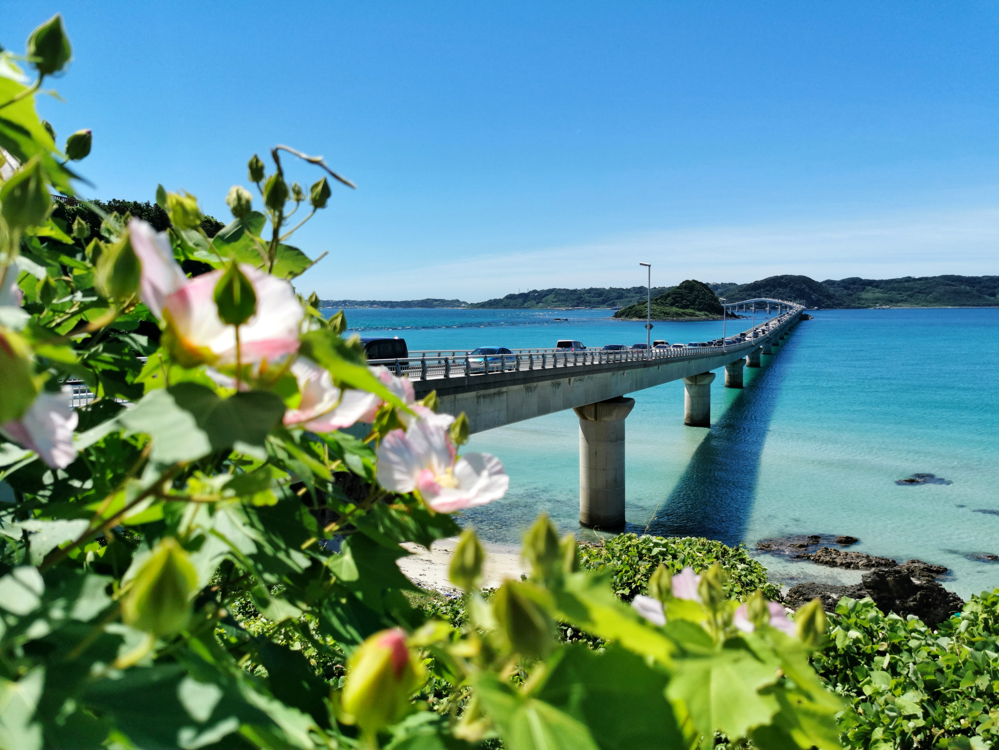
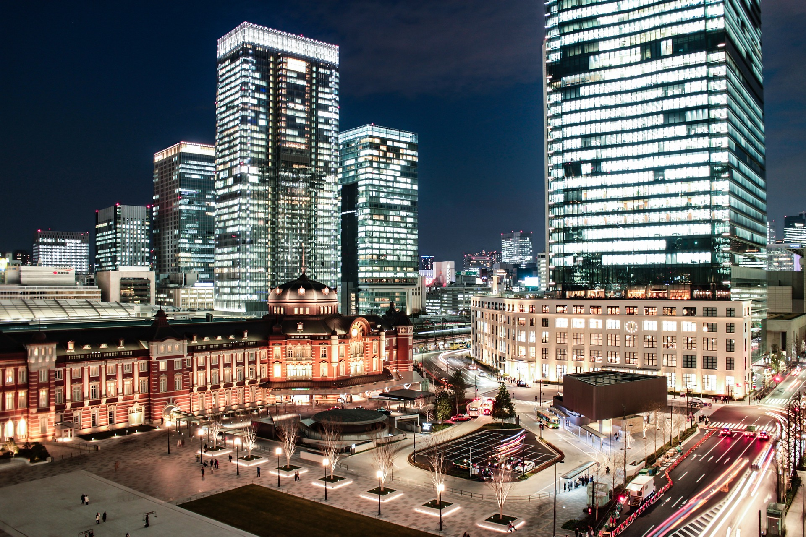

石塀小路（いしべこうじ）

石畳で小さな迷路のような石塀小路に入ると全てが絵になる世界が広がっています。石塀小路はすべての人を物語の主人公にしてくれる美しい街並みが広がっています。ゆっくり歩いてこの景色を楽しみましょう。
古宇利大橋（こうりおおはし）

古宇利島と屋我地島を結ぶ沖縄本島の北部エリアにある橋です。沖縄の橋の中でも抜群のロケーションを誇り、人気の高い橋となっています。 橋を渡りながら見渡せるのは、「これぞ沖縄！」と言わんばかりのコバルトブルーの輝く海。あまりのキレイさに、橋の歩道から海を眺めている人を見かけるのも古宇利大橋ならでは。
東京駅・丸の内駅前広場

東京駅前にある広場が2017年12月にオープン。開放感ある広場からライトアップされた東京駅を間近に眺められ、特に平日ならビルの明かりと一緒に煌びやかな東京夜景が楽しめます。写真撮影スポットとしても人気が高いようです。